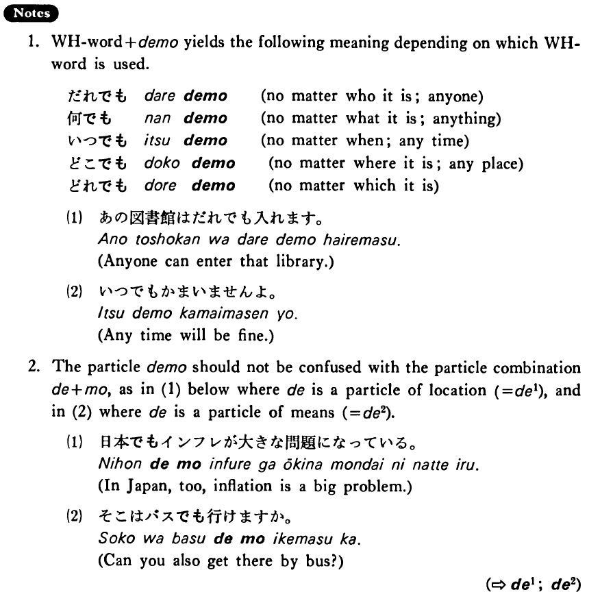

でも (B. 111)
- (ksa).
- 先生でも間違う・間違います。
- Even a teacher makes mistakes.
- (ksb).
- 私は難しい仕事でもする・します。
- I will even do a difficult job.
- (ksc).
- ここからでも富士山が見える・見えます。
- Even from here you can see Mt. Fuji.
- (a).
- 子供でもそんなことは分かりますよ。
- Even a child can understand that sort of thing.
- (b).
- お会いしたいんですが、日曜日でも構いませんか。
- I'd like to see you, but it is all right to see you even on Sunday?
- (c).
- あの人は魚でも肉でも食べます。
- He eats anything, whether it be fish or meat.
